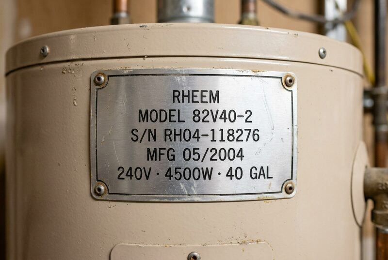

Water heater — leaking
job J-VRTX1

Voice note
Scope — filled from photo + voice
- Equipment
- —
- Serial
- —
- Manufactured
- —
- Issue
- —
Homeowner, at the door
That heater’s only a couple years old — the previous owners put it in.
0.0sec
photo + voice → verified record
foreman
estimator
closer